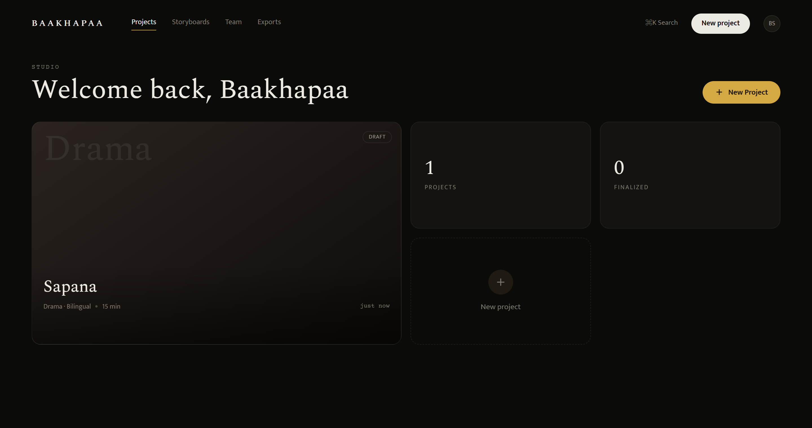
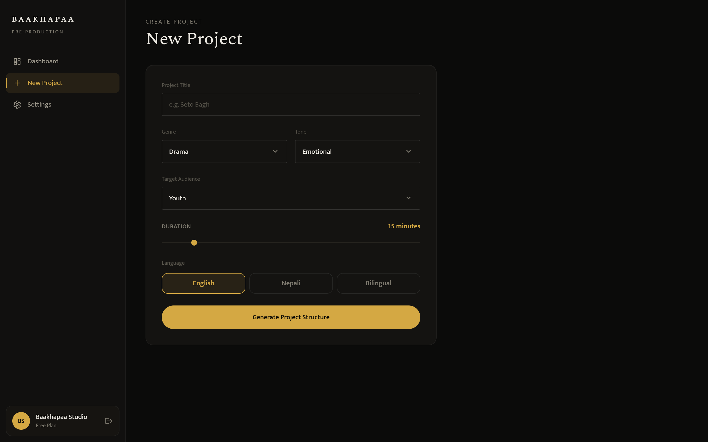
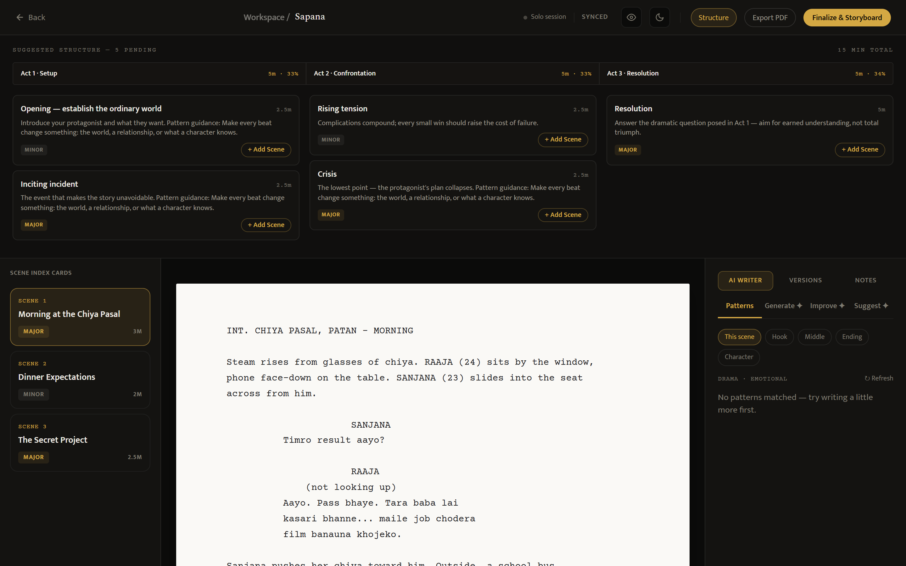
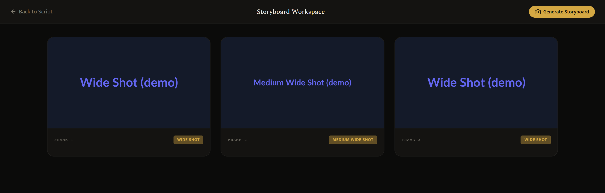
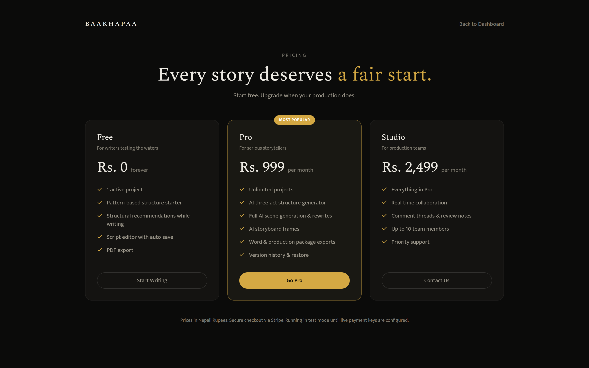

Baakhapaa: AI-powered pre-production intelligence system
All four Month 1 deliverables work. Five modules scheduled for Months 2 and 3 are built as well, and the script generator gained one capability the proposal never mentioned: semantic retrieval over a library of analysed story structures. Every screenshot in this report was captured from the running system.
| Wk | Build focus | Deliverable | Status |
|---|---|---|---|
| 1 | Project setup | Project structure, database schema, user authentication working | Done |
| 2 | Script editor UI | Screenplay editor interface built and styled in browser | Done |
| 3 | AI script generation | Genre input, three act structure, scene time allocation working | Done |
| 4 | AI assistance mode | Generation, improvement, and suggestion modes live. Bilingual output working. | Done |
FastAPI backend: 17 modules, 34 routes. React 18 frontend with Tailwind: 22 components and pages. Eight tables cover User, Project, Script, Scene, StoryboardFrame, Version, Comment and Subscription. Registration, bcrypt hashing, JWT issuance and protected routes all work.

The editor renders screenplay format in a fixed-pitch column, with a structure timeline beside it and scene cards that jump to their place in the script.
Genre, tone, audience, duration and language are set before writing starts. The engine returns a three-act frame split 33/33/34 percent, then divides each act into major turning-point scenes and minor transitional ones. Each scene carries its own minute allocation, cast, location and emotional beat. Structure arrives as a preview; scenes enter the script one at a time, as the writer accepts them.

The writer can generate a scene from a one-line brief, select any passage for a rewrite, shortening or translation, or ask for continuations. Dialogue comes out in Nepali Devanagari and action lines in English, shaped by a house-voice prompt rather than generic screenplay English.

Not in the proposal. Each request is embedded locally with a 384-dimension model and matched by cosine similarity against 15 analysed story patterns, so a sports underdog brief can pull structure from a boxing drama despite sharing no genre tag. A pgvector migration is ready for when the library outgrows in-memory ranking. Free-tier users get the same structural guidance without spending an API call, which is the Patterns mode visible in Figure 3.
| Module | Delivered in Month 1 |
|---|---|
| Storyboard engine and UI | Six shot types assigned by scene position and act, frame grid, per-frame regeneration |
| Collaboration | Inline comment threads, collaboration presence bar |
| Version history | Auto-snapshot on save, restore points, diff between any two versions |
| Export system | PDF, Word, and a combined production package |
| Subscription system | Free, Pro and Studio tiers with checkout, webhooks and paid-tier gating on AI routes |


A security audit closed what it found: ownership checks on every route touching a script, and field whitelists on updates so a client cannot write columns it was never offered. There is also a command palette, a settings page, a pricing page, and a demo mode running the whole system on local SQLite with mocked AI, so the platform can be reviewed without provisioning an API key.
Everything above has been run end to end in demo mode, which is how the screenshots were produced. None of it has been tested against live Claude, DALL·E or Supabase credentials. That is the first task of next phase, along with tuning tier limits and fixing Devanagari rendering in PDF export, which currently falls back to a font that cannot draw the script.